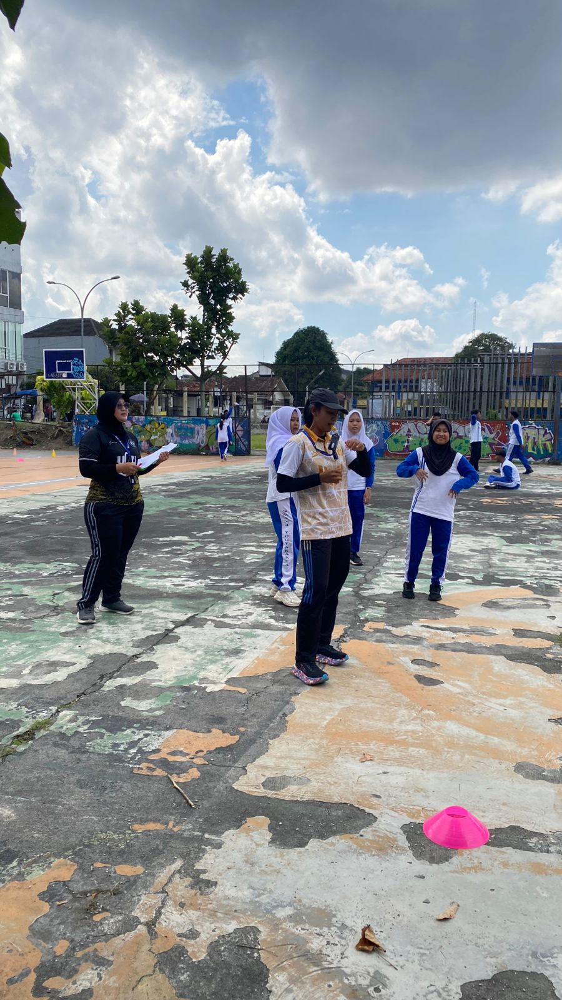
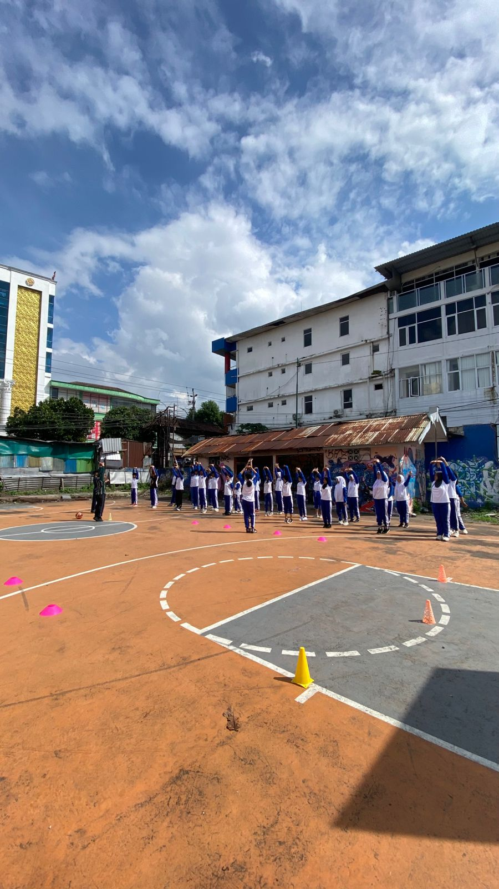
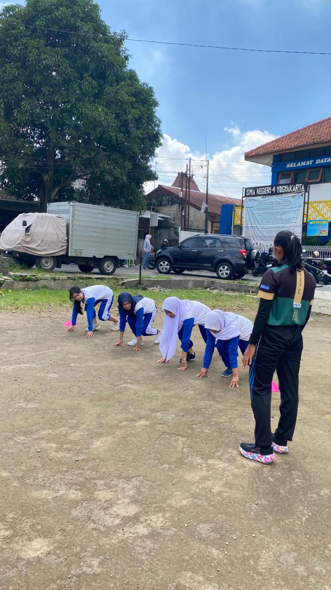
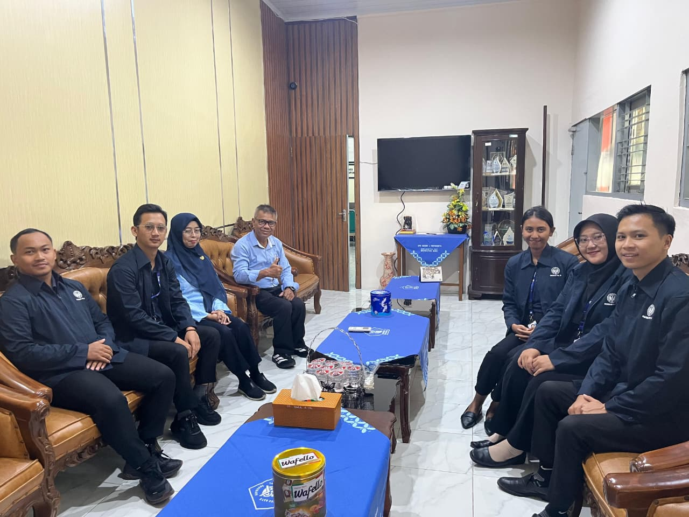
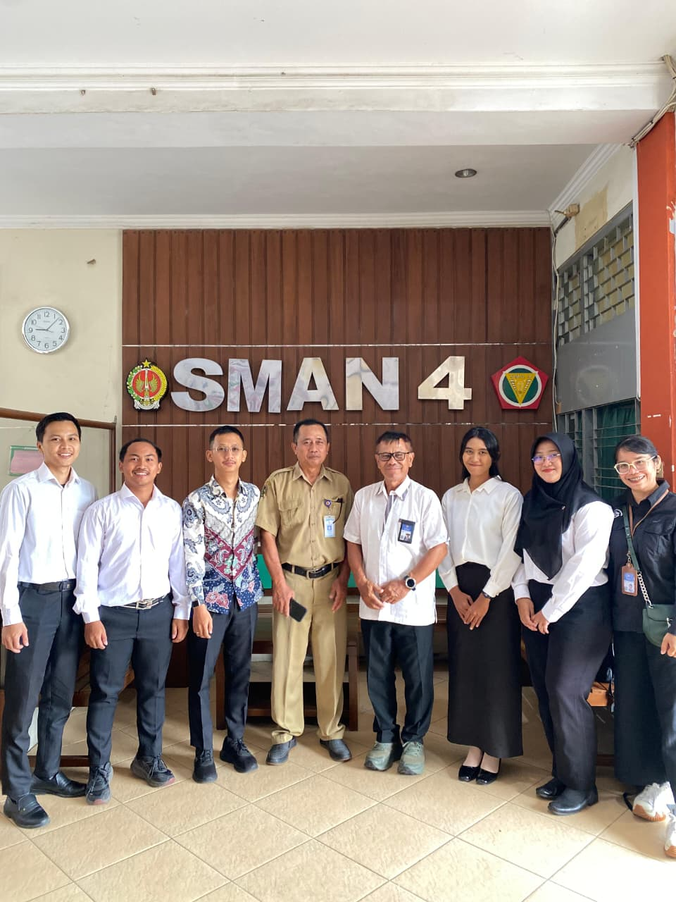
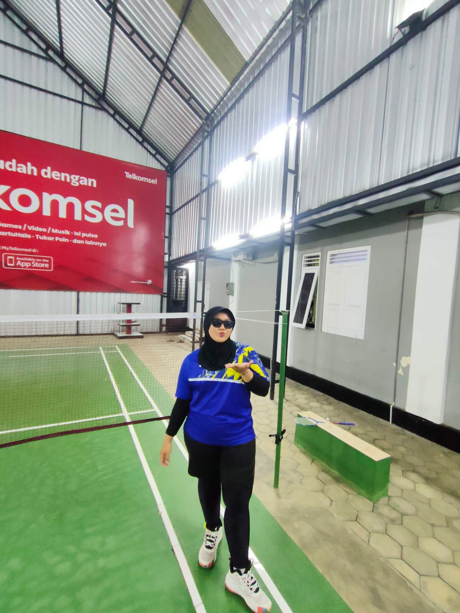

Dokumentasi PPL 1 & PPL 2
Rekam jejak visual perjalanan transformasi mengajar, kolaborasi manajerial sekolah, pelayanan kebugaran, dan interaksi bermakna dalam membimbing peserta didik di SMA Negeri 4 Yogyakarta.
SMA Negeri 4 Yogyakarta
Masa PPL Terbimbing - Semester Ganjil
Praktik Mengajar & Asesmen
Bola Basket (Under Ring), Atletik (Lari 400m)
DPL & Guru Pamong
Supervisi Akademik & Evaluasi Lapangan
Momen Unggulan PPL 1





Praktik Mengajar Bola Basket (Under Ring)
Pembelajaran PJOK Fase F - Kelas XI F6
Pelaksanaan praktik pembelajaran PJOK materi Bola Basket fase F di kelas XI F6 dengan fokus teknik dasar under ring, lay-up shoot, dan rotasi kerja sama kelompok.
Penilaian & Asesmen Pembelajaran PJOK
Asesmen Keterampilan Bola Basket & Atletik Lari
Pengambilan data asesmen unjuk kerja psikomotorik siswa melalui rangkaian teknik permainan bola basket serta pengujian performa daya tahan fisik lari 400 meter di lapangan sekolah.
Kunjungan & Monitoring DPL UNY
Supervisi Akademik & Penguatan Pedagogis
Dosen Pembimbing Lapangan (DPL) Universitas Negeri Yogyakarta melaksanakan visitasi dan koordinasi evaluatif dengan Guru Pamong dalam memantau perkembangan mahasiswa.
Penerjunan & Orientasi PPL Terbimbing
Penyambutan Resmi di SMA Negeri 4 Yogyakarta
Acara penerjunan resmi dan orientasi lingkungan sekolah bagi mahasiswa PPG Prajabatan PJOK oleh pihak kampus UNY kepada jajaran Kepala Sekolah dan Guru Pamong SMA Negeri 4 Yogyakarta.

Aktivitas Pembelajaran PJOK Bersama Siswa
Pemanasan Terstruktur & Pengkondisian Fisik
Pemanasan terstruktur, senam kebugaran jasmani, dan stretching dinamis untuk membangkitkan antusiasme, kebersamaan, dan kesiapan fisik siswa sebelum materi inti pembelajaran.
PPL 2 Mandiri PJOK
Siklus 1 - 4: Voli, Sepak Bola, Kasti, & Sprint
Manajerial & Pelayanan Sekolah
Piket Lobby, Layanan UKS, Pengawasan ASTS, Kepanitiaan
Purna Tugas PPL 2
Pelepasan Resmi PPG Prajabatan UNY di SMAN 4

Praktik Mengajar Mandiri PJOK
Implementasi Pembelajaran Mandiri Lapangan
Memimpin pembelajaran PJOK secara mandiri di lapangan terbuka, menerapkan pendekatan student-centered dan metode Direct Instruction & TGfU guna menciptakan suasana belajar yang aktif, aman, dan menyenangkan.


Piket Pelayanan & Ketertiban Lobby Sekolah
Pelayanan Tamu Kedinasan & Penegakan Budaya 5S
Bertugas di meja piket lobby utama SMA Negeri 4 Yogyakarta dalam melayani administrasi buku tamu kedinasan, koordinasi perizinan peserta didik, serta menyambut kedatangan siswa dengan senyum, sapa, dan salam.


Layanan Kesehatan & Pertolongan Pertama di UKS
Pemeriksaan Tanda Vital & Manajemen Obat P3K
Memberikan pertolongan pertama (P3K) dan penanganan medis darurat kepada peserta didik yang mengalami keluhan fisik saat pelajaran olahraga, serta melakukan pemantauan tanda-tanda vital dasar siswa di ruang UKS.


Pengawasan Asesmen Sumatif Tengah Semester (ASTS)
Pengawalan Integritas Ruang Ujian & Administrasi Evaluasi
Mengemban amanah sebagai pengawas ruang dalam pelaksanaan ASTS, menjaga ketertiban suasana ujian, membantu penanganan kendala teknis perangkat ujian, serta mengelola verifikasi presensi dan berita acara evaluasi.


Kepanitiaan Lomba Olahraga & Kesiswaan
Penyelenggaraan Event Olahraga & Penjurian Fair Play
Terlibat aktif sebagai panitia penyelenggara kegiatan perlombaan kesiswaan di SMA Negeri 4 Yogyakarta, menyiapkan bagan turnamen olahraga, memimpin pertandingan sebagai dewan juri/wasit lapangan, dan evaluasi suksesi acara bersama guru pembina.

Seremoni Pelepasan & Penarikan PPL 2
Penutupan Resmi Program Pengalaman Lapangan 2
Seremoni resmi pelepasan dan penarikan mahasiswa PPL 2 PPG Prajabatan PJOK UNY oleh DPL bersama jajaran pimpinan SMA Negeri 4 Yogyakarta atas tuntasnya program pengabdian.